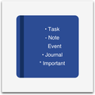

Digital bullet journal with enhanced support for iPad and Apple Pencil
BulletJournal is a digital bullet journal web application specifically designed for iPad and Apple Pencil users. It provides a natural journaling experience with handwriting support, offline functionality, and a distraction-free writing mode.
Install BulletJournal directly from AltStore PAL, a trusted alternative app store for iOS devices.
Add to AltStoreIf you don't have AltStore installed, download it here.
| File | Description |
|---|---|
| manifest.json | AltStore source manifest file |
| BulletJournal_altstore.ipa | AltStore-compatible IPA package |
| icons/ | App icons in various sizes |
| screenshots/ | App screenshots |
| News Article | App launch announcement |
BulletJournal is also available on Setapp Mobile, a subscription-based app service with curated productivity apps.
View on SetappSetapp subscribers get access to BulletJournal along with hundreds of other premium apps for a single monthly fee.
Find BulletJournal on the Aptoide iOS store, an open alternative to traditional app stores.
View on AptoideAptoide offers a free and open ecosystem for app distribution with no restrictions.